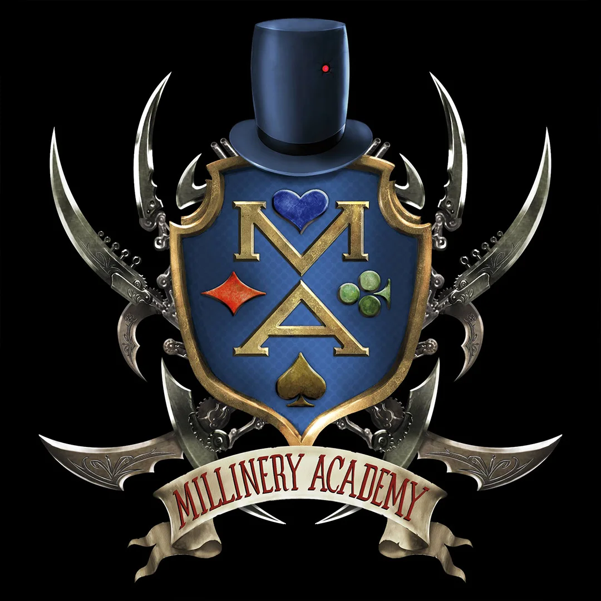
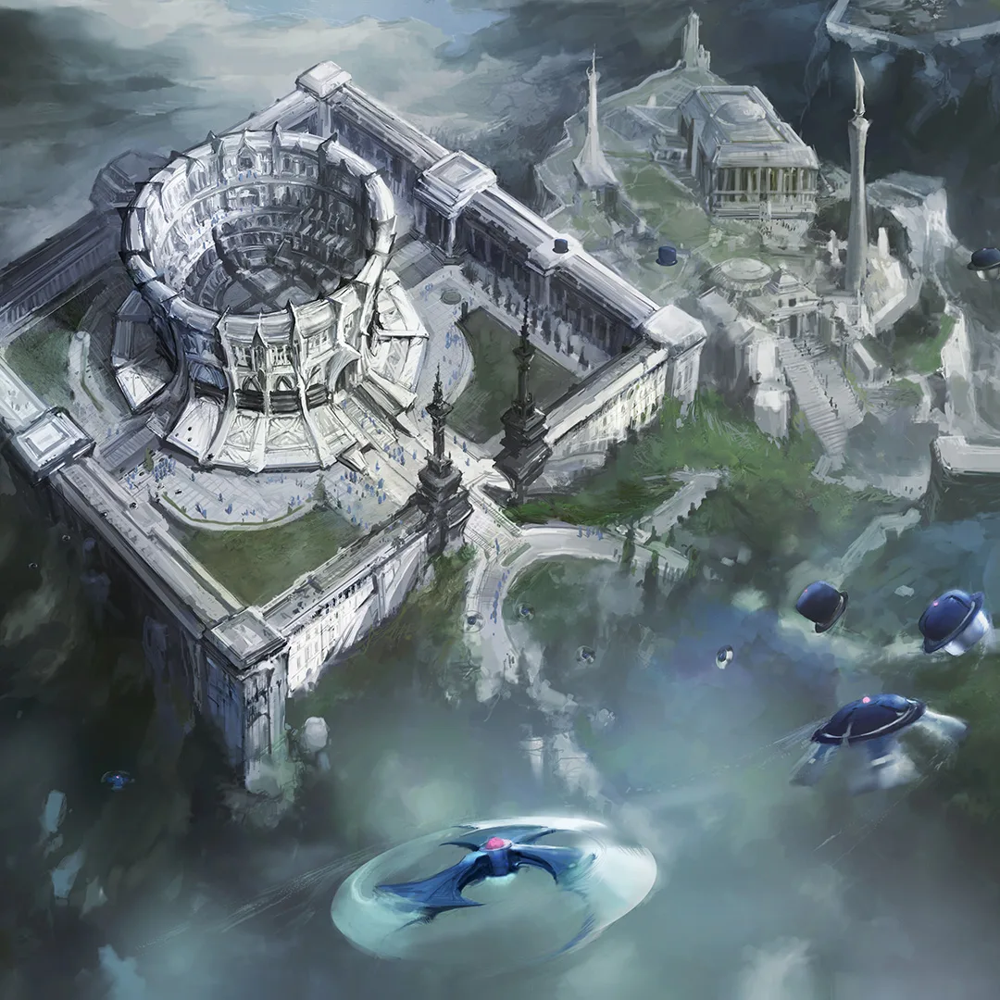
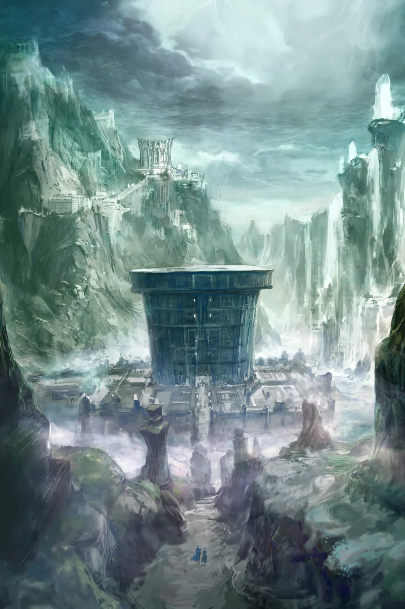
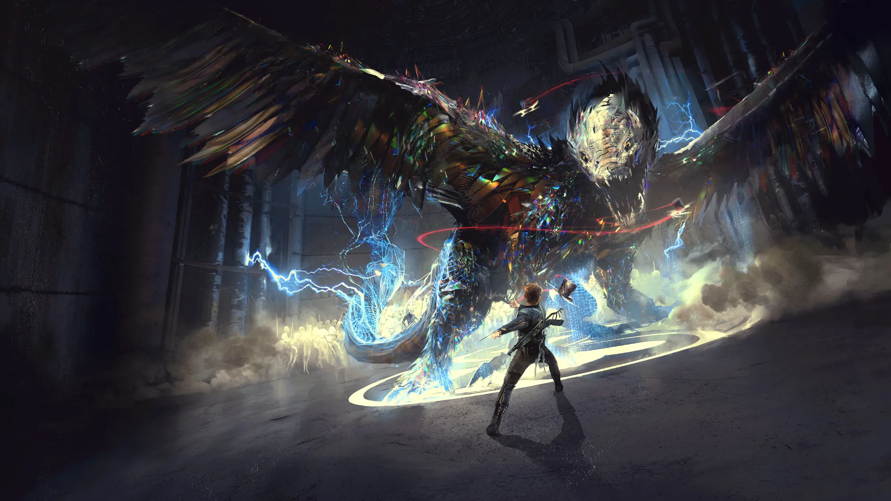
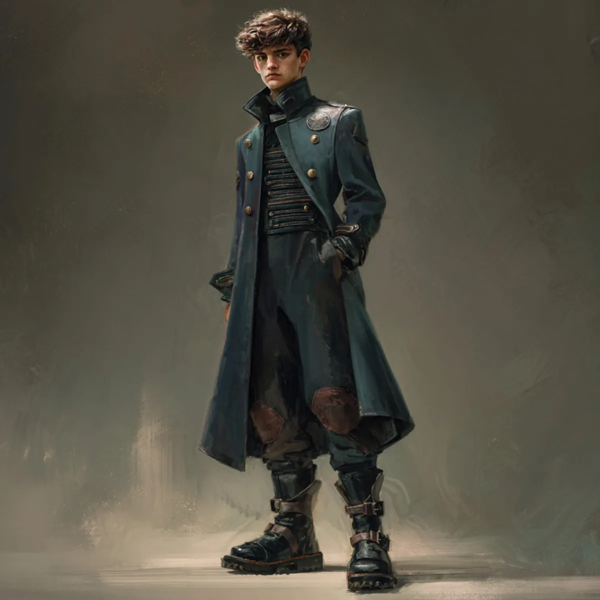

The Millinery Academy is Wonderland's legendary school for Royal Bodyguards, spies, inventors, and warriors. Here, courage is tested, friendships are forged, and the first threads of destiny are woven.

Holographic and Transmutative Base of Xtreme Combat.

Inside the H.A.T.B.O.X., Cadets battle holographic creatures, impossible missions, and simulated battles that adapt, evolve, and challenge every weakness.
Every Milliner's hat begins with a single strand of Caterpillar Silk. Woven by Wonderland's ancient Caterpillar Oracles, each living thread possesses extraordinary abilities. In the hands of a skilled Milliner, silk becomes armor, weapons, healing, communication—even consciousness itself. This is the fabric from which Wonderland's greatest protectors are made.
Enhances focus, courage, speed, and physical ability.
Transforms hats and equipment into powerful tools and weapons.
Generates, stores, and channels raw energy.
Heals wounds, restores equipment, and nurtures life.
Expands awareness, communication, and perception beyond ordinary senses.
Awakens sentience in objects and influences living minds.
Connects all living creatures together in a vast web of consciousness.

Orphaned at an early age and raised within the Academy, thirteen-year-old Hatter Madigan dreams of following in the footsteps of his legendary older brother, Dalton. But greatness isn't inherited. It is woven one choice, one challenge, and one act of courage at a time.
Fearless, brilliant, and endlessly inventive, Astra rarely follows the rules when she can rewrite them. Her curiosity and loyalty make her one of the Academy's most unpredictable Cadets.
The Academy's fiercest fighter, Caledonia believes strength is everything. As she learns to trust those around her, she discovers that true courage comes from fighting for others.
Though blind, Newton perceives more than anyone else. His extraordinary awareness, quiet wisdom, and calm determination make him the conscience of Hatter's closest friends.
A gifted young alchemist, Weaver possesses a rare talent for unlocking the hidden properties of Caterpillar Silk and Wonderland's natural elements. Compassionate, curious, and quietly fearless, she proves that the greatest transformations begin long before the battlefield.
The Academy's most celebrated graduate, Dalton is the Royal Bodyguard every Cadet hopes to become. To Hatter, he is both an inspiration and the impossible standard he must one day surpass.
Born into Wonderland's most powerful family, Rhodes believes greatness is inherited, not earned. Brilliant and fiercely competitive, he sees Hatter as the one Cadet standing between him and the future he believes is already his.
The Academy's formidable leader demands excellence above all else. He believes discipline, not destiny, creates heroes—even when the cost is more than some Cadets are willing to pay.
Wonderland's greatest inventor pushes the boundaries of imagination through extraordinary machines and impossible technology. His creations have transformed the Academy—and may ultimately shape the future of Wonderland.
Hidden beyond the Academy's walls, the Dark Sage patiently weaves a far more dangerous future. While the Cadets prepare for the battles they can see, he is already shaping the ones they cannot.
Young Hatter is the gateway to the Millinery Academy, following thirteen-year-old Hatter Madigan as friendship, sacrifice, and courage begin weaving the destiny that will one day change Wonderland forever.